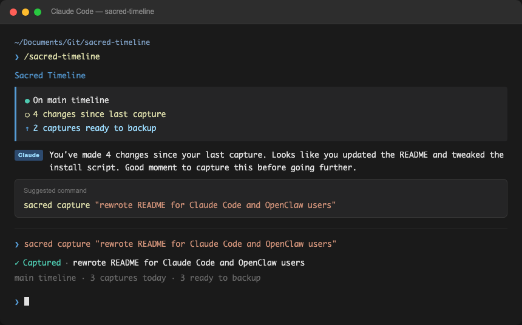

Sacred Timeline gives Codex, Claude Code, Cursor, and other AI agents checkpoints, safe experiments, rollback, backup, and a plain-English story of what changed.
That is powerful until the working version disappears into a blur of generated edits. Sacred Timeline is for the moment when you need confidence, not another technical lecture.
Files change across the project and the agent moves on before you know what happened.
You want to try a bolder version, but not if it wrecks the one that already works.
Git can solve this, but most AI builders do not want to become git operators.
Sacred Timeline wraps the useful parts of git in words that make sense while you work with an agent.
captureexperimentkeep / discardbackupnarrateThe demo is simple: check status, capture a working moment, start an experiment, keep or discard it, then narrate and back up the work.
sacred doctor shows whether the project is protected and connected.
sacred capture saves useful progress before the agent keeps moving.
sacred experiment lets you try a bold direction safely.

Protect proposals, client microsites, research, and operating-system work.
Build internal tools with Codex or Claude without losing the working version.
Add checkpoints, rollback, and a client-ready work story to fast AI-generated delivery.
You do not need to understand the terminal. Ask the agent to protect the project before changing it.
Before we change this project, I want to protect it with Sacred Timeline. I do not know git, so use plain language. Treat Sacred Timeline as the safety layer for this AI-built work. Please do this: 1. Check where we are working. 2. Check whether Sacred Timeline is installed with: command -v sacred 3. If it is not installed, install it with: curl -fsSL https://raw.githubusercontent.com/suhitanantula/sacred-timeline/main/install.sh | bash 4. Run: sacred doctor 5. Run: sacred status 6. If this folder is not protected yet, run: sacred start 7. Explain what you found in plain English. 8. Before making changes, tell me whether we should capture the current state or start an experiment. From now on, use Sacred Timeline language: - capture = save this moment - experiment = try something risky safely - keep = make the experiment part of the main version - discard = abandon the experiment - backup = send protected work to cloud - latest = get protected work from cloud - narrate = tell me the story of what changed Do not teach me raw git unless I explicitly ask.